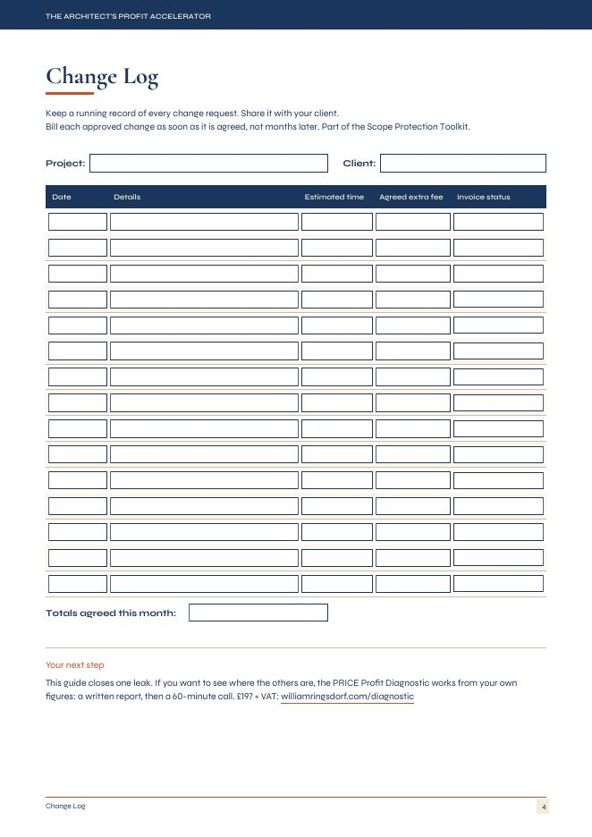

Four pages, made to be used on a live job
- 1
Read this first
What the guide is for and the leak it closes.
- 2
Your gates
Five steps for running a gate, and a table of eight phases from appointment and brief to handover, with RIBA stage numbers where they apply. Each has room for the deliverables, the sign-off date and the stage payment.
- 3
Decisions and Changes
A schedule of the decisions your client has to make and the dates they are needed by, then four steps for a change that arrives after sign-off.
- 4
Change Log
A running record of every change request: date, details, estimated time, agreed extra fee and invoice status.


Pages 2 and 4. The PDF has form fields, so you can fill it in on screen or print it, and use it on the job you are running now.